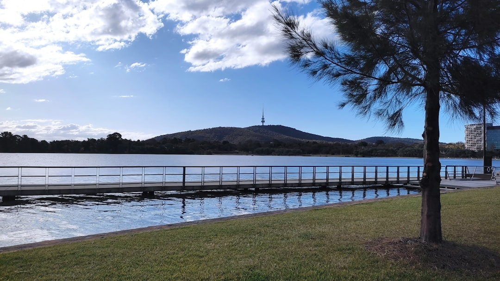

A useful Canberra retaining wall enquiry starts with six recorded facts: grade, nearby loads, water paths, boundaries, access and visible symptoms. The published source page separates eight wall pathways, including concrete sleeper, masonry, stone, timber, gabion, drainage coordination, engineered approval ready work, and repair or replacement. It also treats building approval and development approval as separate checks, so material choice should come after site geometry, drainage and access are understood.
For homeowners comparing retaining walls canberra options, the practical starting point is not the wall face, but the height, water, load, boundary and access facts around it.
Retaining Walls Canberra Explained
Retaining Wall Canberra frames the first enquiry around measured site facts: retained height, cut and fill, loads, drainage, boundaries and access. That order is useful because a neat wall face can hide the real work behind it, especially where a slope, driveway, building edge or neighbouring ground changes the load on the retained soil.
Start with wide photographs from both ends before close ups. The source guide specifically recommends showing the whole geometry first, then adding detail photos of lean, cracking, decay, washout or persistent wetness. A single close photo of a failed corner rarely shows whether the wall is resisting a garden bed, a house bench, redirected water or a larger level change.
- Grade: record the maximum retained height and the broader slope relationship.
- Loads: photograph what sits above or near the wall, including paving, driveways, structures and garden levels.
- Water: note where runoff, downpipes, irrigation or wet patches appear after rain.
- Access: describe how materials, machinery and spoil would move from the street to the work area.
Why Canberra Sites Need The Ground Read First
Canberra blocks have not all arrived at their levels in the same way. The source page contrasts older inner south gardens, hillside house benches in Weston Creek, Belconnen and Tuggeranong, and newer estate levels in Gungahlin and Molonglo. Those examples matter because a replacement wall in a mature garden is a different problem from a boundary wall shaped by subdivision earthworks.
For an older wall, the question may be whether the wall material has reached the end of its service life or whether the ground and water around it have changed. For a newer estate wall, the question may be how any change works with fixed levels, easements and neighbouring ground. The page also notes Canberra's cycle of frosty winters, dry spells and short intense storm bursts, so drainage and soil movement belong in the first discussion rather than as an afterthought.
A related crawl reference, a Canberra retaining wall site checklist, follows the same practical theme: describe the site before comparing wall systems.
Choosing A Wall Pathway Without Starting With Materials
The source page lists concrete sleeper, segmental block, reinforced masonry, sandstone, natural stone, timber, gabion, drainage coordination, engineered approval ready work, and repair or replacement pathways. Those are not interchangeable finishes. Each pathway depends on geometry, footing or embedment needs, footprint, water management, handling access and the condition of what already exists.
Concrete sleeper post and panel walls may suit straight or stepped residential lines when embedment, transitions, loads and drainage are designed as one scope. Segmental block and masonry options need their footprint and reinforcement requirements considered. Stone and gabion options rely on enough footprint and suitable foundation conditions. Timber may be relevant for appropriate lower terraces, with durability, moisture exposure and future replacement considered.
Repair and replacement should begin with cause led assessment. Movement, decay, washout and cracking are symptoms, not full diagnoses. A written scope should say whether the likely answer is repair, stabilisation or full replacement, and what assumptions sit behind that judgement.
Approval, Design And Qualified Roles
The published guide keeps building approval and development approval as separate checks for retaining walls in Canberra. That distinction is important because a wall can be affected by retained height, nearby loads, boundaries, structures and the wider site arrangement. A homeowner does not need to solve the approval pathway before asking for help, but the enquiry should give enough information for the provider to identify whether simple assumptions are inappropriate.
Use the first conversation to ask who is responsible for design, certification, approval advice, excavation planning and drainage detail. The source page is careful about regulated work, saying certification and design belong with appropriately qualified professionals. Housing Industry Association and Master Builders Australia are relevant industry bodies for broader building context, while ASIC Moneysmart gives general renovation guidance for planning and managing renovation decisions.
- Ask whether building approval and development approval have been considered separately.
- Ask what information an engineer or certifier would need if the wall is outside a simple pathway.
- Ask how boundaries, nearby structures and access constraints will be recorded in the written scope.
What A Comparable Written Scope Should Contain
Two quotes are only comparable when they answer the same site problem. A useful written scope should record dimensions, symptoms, access, water paths and nearby structures, then connect those facts to the proposed pathway. If one response prices only a visible wall face and another includes excavation, drainage and spoil movement, the lower number may simply be answering a narrower question.
Drainage deserves a line item because the source page treats collection zones, separator, subsoil drain, outlet, excavation access and spoil movement as part of a workable wall scope. Access deserves the same attention. A site with tight side access, mature landscaping or a difficult spoil route may change how a wall can be built, even before material preference is discussed.
For retaining walls Canberra owners are trying to compare, a good enquiry does not need polished drawings. It needs measured height, wide photos, water observations after rain, boundary context and a plain note about what has changed. That gives the provider a fair basis for a site response and keeps approval, design and construction responsibilities visible.
- Measure the retained height. Record the tallest retained point and the broader slope relationship rather than relying on one isolated measurement.
- Photograph the whole wall. Take wide photos from both ends before close ups of lean, cracking, decay, washout or persistent wetness.
- Trace water paths. Note where stormwater, irrigation, downpipes or wet patches appear, especially after rain.
- Map access. Describe how people, materials, equipment and spoil would move between the street and the wall.
- Ask about approvals. Check whether building approval and development approval need to be considered separately for the site.
| Situation | Main question | Useful evidence to provide |
|---|---|---|
| Older or failing wall | Is the wall tired, or has the surrounding ground or water changed? | Wide photos, retained height, symptoms, wet areas and nearby loads |
| New or changed landscape | Has paving, irrigation, a garden bed or downpipe changed the retained soil conditions? | Photos after rain, drainage paths, added surfaces and changed levels |
| Estate or boundary wall | How do fixed levels, boundaries, easements or neighbouring ground affect the scope? | Boundary context, access route, level changes and approval questions |
Common questions
What information should I send before asking for a Canberra retaining wall quote? Send the retained height, wide photos, close photos of symptoms, water observations, nearby loads, boundary context and access details. The source page says these measured facts should come before material selection.
Should I choose concrete sleeper, block, stone, timber or gabion first? No. The pathway should follow the site's geometry, loads, drainage, access and approval position. Material preference is useful only after those constraints are understood.
Why separate building approval and development approval? The published guide treats them as separate checks for Canberra projects. Ask the provider how each pathway is being considered, especially where height, boundaries, nearby structures or significant loads may affect the wall.
This guide covers site facts, wall pathway choices, drainage, access and approval questions for Canberra retaining wall enquiries.